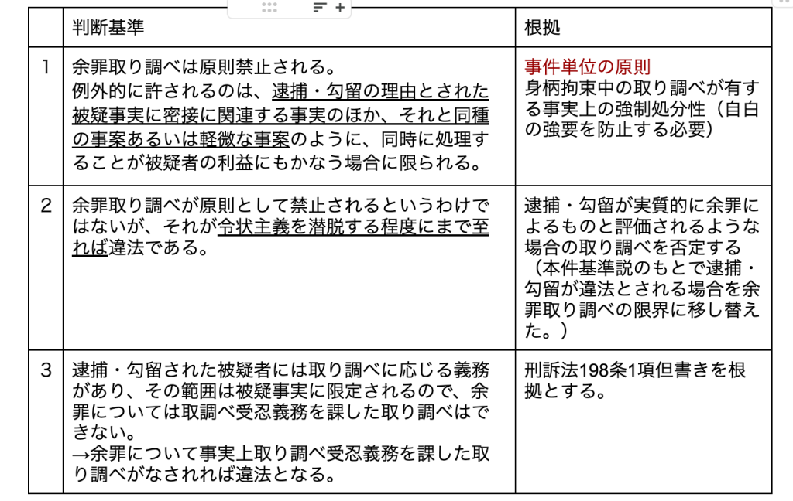

Legal Dragoman
Recent Posts
Notes by a Legal Dragoman
Categories
All
(17)
まとめ
(4)
会社法
(2)
刑法
(4)
刑訴法
(3)
司法試験対策
(8)
商法
(1)
憲法
(1)
期末試験対策
(4)
民訴法
(2)
知的財産法
(3)
行政法
(1)
著作権法［司法試験対策］
知的財産法
司法試験対策
分割前の記事は こちら ．
6/03/2024
特許法［司法試験対策］
知的財産法
司法試験対策
分割前の記事は こちら ．
6/02/2024
憲法
憲法
まとめ
私生活（個人に関する情報）をみだりに公開されない権利（人格権）
4/12/2024
民事訴訟法［司法試験対策］
民訴法
司法試験対策
不当な方法で収集した証拠の証拠能力
利益変更・不利益変更の禁止
反射効
補助参加における参加的効力（46条）
3/14/2024
民事訴訟法
民訴法
まとめ
未整理
3/11/2024
刑事訴訟法［司法試験対策］
刑訴法
司法試験対策
領置（刑訴法221条）
3/09/2024

刑事訴訟法（捜査）
刑訴法
まとめ
未整理
3/06/2024
刑事訴訟法（訴訟）
刑訴法
まとめ
「
被告人1人の行為により犯罪構成要件のすべてが満たされたと認められるとき
は、 他に共謀共同正犯者が存在するとしてもその犯罪の成否は左右されない」
3/04/2024
知的財産法［司法試験対策］
知的財産法
司法試験対策
令和５年度のみ復元
2/29/2024
行政法［司法試験対策］
行政法
司法試験対策
上記の医療法及び健康保険法の規定の内容やその運用の実情に照らすと，医療法３０条の７の規定に基づく病院開設中止の勧告は，医療法上は当該勧告を受けた者が任意にこれに従うことを期待してされる行政指導として…
2/17/2024
会社法上の大きな問題
会社法
株式併合や支配株主による株式買取請求（いわゆるスクイーズアウトの場面における少数株主の取り得る対処法）
2/12/2024
商法［司法試験対策］
商法
司法試験対策
田中亘「株主第一主義の合理性と限界(上)（下）」法律時報92巻5号123頁、92巻7号79頁（2020）↩︎
2/10/2024
刑法［司法試験対策］
刑法
司法試験対策
強盗罪
2/10/2024
会社法［期末試験対策］
会社法
期末試験対策
実質上の引受人すなわち名義借用者がその株主となる
2/01/2024
刑法各論［期末試験対策］（２）
刑法
期末試験対策
執行不奏効の場合の代償請求（民執 31Ⅱ）
「第1項の引渡しの執行が目的を達することができ ないときは、被告は、原告に対し、350万円を支払え。」
「よって、原告は、被告に対し、所有権に基づき本件機械…
1/28/2024
刑法各論［期末試験対策］（３）
刑法
期末試験対策
実行行為の危険性が結果に現実化した場合に刑法上の因果関係を認める見解に立つ。
1/28/2024
刑法各論［期末試験対策］（１）
刑法
期末試験対策
1/28/2024
No matching items